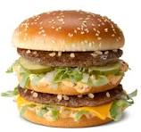

Big Mac
Home

Description
The Big Mac is a hamburger sold by international fast food restaurant chain McDonald's. It is one of the company's flagship products and is known for its distinctive taste and structure.
Ingredients
- 2 sesame seed buns
- 1 beef patty
- 1 slice of cheese
- Shredded lettuce
- Pickles
- Onions
- Special sauce (mayonnaise, ketchup, mustard, relish)
Steps
- Toast the sesame seed buns.
- Cook the beef patty on a grill or stovetop until fully cooked.
- Assemble the burger by placing the bottom bun on a plate.
- Add the beef patty on top of the bottom bun.
- Place a slice of cheese on the patty.
- Add shredded lettuce, pickles, and onions on top of the cheese.
- Spread the special sauce on the top bun.
- Place the top bun on the assembled ingredients.
- Serve and enjoy your homemade Big Mac!